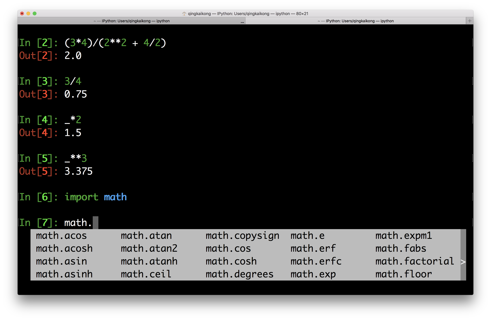

第01章: Python基础
Contents
第01章: Python基础 ¶
Table of Contents
搭建Python开发环境(Getting Started with Python)¶
确定你的系统¶
经过多年的发展，计算机的系统主要分为三大类：
Windows是目前最常用的操作系统。尽管有多个版本，但目前的常见版本序列是Windows xp，Windows 7， Windows 10， Windows 11.
Linux作为开源系统的代表，其实是一个很小的内核代码。基于此有很多的发型版本，包括Ubuntu，Debian等。常见的个人用Linux系统的发型版本为Ubuntu。
MacOS是苹果公司Mac系列电脑所用的操作系统，本质上是基于Unix的一种操作系统，其主要的命令行操作流程与Linux类似，但操作界面和资源组织方式与其他两种操作系统不一样。
Python的开发环境与操作系统紧密关联，在搭建Python开发环境时一定要先确定好所使用的系统版本。
Python开发环境的搭建方法¶
python开发环境主要包括以下两点：
python核心文件（官网可下载）+ 常用的python包（主要由不同的开发群体维护和提供下载）
集成化的代码编辑、调试、执行和可视化工具。
原则上，总共有三种Python开发环境的安装和搭建方法。
从零开始，私人订制：
安装python运行环境 （python core）：包含python语言解释器，python运行的基础库和python交互运行工具python shell
在系统上设置python的环境变量 （environment variables）以便于命令行使用
安装python IDE或者python代码编辑器+编译插件 （python IDE or python editor plus plugins）
使用python下的pip命令安装python包 （packages via pip）
选择并安装对应的代码编辑、调试、执行和可视化工具 （python file editor, debugger and runner）
因地制宜，节省时间：
根据系统选择对应的软件包管理工具：Windows的Chocolatey，Linux的apt、yum、dnf和pkg，Mac OS的MacPorts和HomeBrew
利用软件包管理工具安装python：
Windows：choco install python
Linux： sudo apt-get install python
Mac OS：brew install python 或者 port install python
利用python语言的包管理工具pip安装对应的软件包
根据个人喜好选择python的editor+extension或者IDE：
Editor -> Visual Studio Code (All OSs)
Editor -> Sublime Text (All OSs)
Editor -> Atom (All OSs)
Editor -> Vim/NeoVim (All OSs)
Editor -> GNU Emacs (All OSs)
Editor -> TextMate (Mac OS only)
IDE -> IDLE (official simple ide)
IDE -> Jupyer Notebook (Currently Used in This Document)
IDE -> Pycharm (All OSs)
IDE -> Spyder (All OSs)
IDE -> Eclipse+Pydev (All OSs)
IDE -> Thonny (All OSs)
IDE -> WingIDE (All OSs)
一劳永逸，无所不包：
根据系统版本下载对应的Anaconnda/Miniconda版本
安装下载的Anaconda/Miniconda并配置好对应的环境变量
使用Anaconda自带的Spyder或者其他的编辑器软件写python程序
尽管他们最终获得的结果是一样的，但具体操作步骤和对计算机熟悉程度的要求是很大的。对于普通初学者而言，我推荐基于Anaconda/Miniconda，能够在最短的时间内获得学习本文档的所有程序。
基于Anaconda搭建Python开发环境¶
从官网下载Anaconda的安装文件。注意Anaconda的企业版、社区版都是收费的，但是个人版免费！所以我这里直接提供个人版的网址。根据系统版本和所需要的python版本选择安装文件。
以下是Anaconda个人版的下载页面
打开从网上下载的安装包，安装Anaconda软件包。原则上讲，只要正确安装了软件包，应该就能实现即开即用的效果。安装完毕后，在windows的开始菜单搜索Anaconda，可能出现如下效果：
这里会出现很多项目，大部分在后续会用到。不过，在刚开始的时候我们只需要看到橘色的Jupyter notebook和黑色的Anaconda Prompt。
首先是Jupyter notebook。我们点击上面这个橘黄色的Jupyter Notebook打开它，会出来一个黑色的界面，长这个样子： 然后你的浏览器就会自动跳出来。
假如浏览器没有跳出来也不怕，你看这个黑色的界面也说了，
To access the notebook, open this file in a browser: file:///C:/Users/MSi/AppData/Roaming/jupyter/runtime/nbserver-6684-open.html
你就自己打开你的浏览器，然后在浏览器的地址栏输入你再点击时出现的网址，按回车就OK。
我们看到的是这个样子：
有的同学可能注意到，这里我们啥都没干就出现了两个文件在里边，可能你的Jupyter打开之后文件还要更多。不过我们先不理它，先上手玩一玩再说，一会儿我再和你讲怎么搞。我们在右上角选择new-Python 3，跳出来这个界面：
然后我们就可以开始我们的代码编写之旅了。我这里标注了最基本的用法，更具体的用法可以直接度娘。后续在文档的丰富过程中，我们会酌情增加。
修改Jupyter Notebook的默认工作路径。
回过头来，我们再解决一下刚才提到的，在Jupyter界面出现了一些无关文件的原因。其实这是因为Jupyter的默认工作路径放到了C盘里的某个文件夹导致。简单来说，Jupyter的工作路径在哪个文件夹，你就会在Jupyter的界面看到那个文件夹里的文件。所以，接下来我们的工作就是修改Jupyter的工作路径。
创建一个文件夹作为接下来的工作路径，比如我想把Jupyter的工作路径改到D盘一个叫做jupyter on msi的文件夹，那么我就先在D盘把这个文件夹创建好：（注意这里的文件夹名字必须是英文，不能带中文）
打开Anaconda Prompt，输入
jupyter notebook –generate-config
程序会自动返回一个地址给你，像这样子：
按照这个返回的地址，找到配置文件（就是这个jupyter_notebook_config.py），用记事本/txt打开它：
你可以看到每行字前面都是井号，这和Python中的注释一样，表示它们是注释，而不是运行的代码。我们直接在文件的最后加上这句：
c.NotebookApp.notebook_dir = ‘D:\jupyter on msi’
就可以啦，注意这句代码的前面不要加上#号。这里的D:\jupyter on msi是我自己的工作路径，你可以按照你自己的修改。
右键点击JupyterNotebook快捷方式，选择属性，删除【目标】里面的【%USERPROFILE%】，点应用-确定即可：
现在你再打开Jupyter notebook，看见的界面就是工作路径里的文件：
讲完了Jupyter，我们最后简单讲讲Anaconda Prompt。为什么介绍它，是因为除了配置Jupyter之外，我们在安装库的时候需要用到它。在Anaconda中，如果我们要安装库，需要用到的就是Prompt，只需要打开它，输入对应的指令（pip install blabla）就可以了。后续在文档的完善过程中，我们会陆续增加Anaconda Prompt的示例讲解。
Python作为简单的计算器¶
We will introduce you to Python by demonstrating features found in any standard graphing calculator. An arithmetic operation is either addition, subtraction, multiplication, division, or powers between two numbers. An arithmetic operator is a symbol that Python has reserved to mean one of the aforementioned operations. These symbols are + for addition, - for subtraction, * for multiplication, / for division, and ** for exponentiation.
We say an instruction or operation is executed when it is resolved by the computer. An instruction is executed at the command prompt by typing it where you see the >>> symbol in the Python shell (or In [1]: sign in Ipython) and then pressing Enter. Or type it in the code cell in Jupyter notebook and pressing Shift + Enter. Since we will use Jupyter notebook for the rest of the book, here we will show all the examples in Ipython shell (Python shell is similar), so that you can familiar with different options.
TRY IT! Compute the sum of 1 and 2.
In [1]: 1 + 2
Out[1]: 3
1+2
3
An order of operations is a standard order of precedence that different operations have in relationship to one another. Python utilizes the same order of operations that you learned in grade school. Powers are executed before multiplication and division, which are executed before addition and subtraction. Parentheses, (), can also be used in Python to supersede the standard order of operations.
TRY IT! Compute \(\frac{3*4}{(2^2+4/2)}\).
In [2]: (3*4)/(2**2 + 4/2)
Out[2]: 2.0
TIP! You may have noticed Out[2] is the resulting value of the last operation executed. You can use _ symbol to represent this result to break up complicated expressions into simpler commands.
TRY IT! Compute 3 divided by 4, then multiply the result by 2, and then raise the result to the 3rd power.
In [3]: 3/4
Out[3]: 0.75
In [4]: _*2
Out[4]: 1.5
In [5]: _**3
Out[5]: 3.375
Python has many basic arithmetic functions like sin, cos, tan, asin, acos, atan, exp, log, log10 and sqrt stored in a module (We will explain it later in this chapter) called math. We can import this module first to get access to these functions.
In [6]: import math
TIP! In Jupyter notebook and Ipython, you can have a quick view of what’s in the module by type the module name + dot + TAB. Furthermore, if you type the first few letters of the function and press TAB, it could automatically complete the function for you, the so called - TAB completion.

The way we use these mathematical functions is module.function, the inputs to them are always placed inside of parentheses that are connected to the function name. For trigonometric functions, it is useful to have the value of \(\pi\) available. You can call this value at any time by typing math.pi in the code cell. Note that the value of \(\pi\) is stored in Python to 16 digits.
TRY IT! Find the square root of 4.
In [7]: math.sqrt(4)
Out[7]: 2.0
TRY IT! Compute the \(sin(\frac{\pi}{2})\).
In [8]: math.sin(math.pi/2)
Out[8]: 1.0
Python will compose functions as you would expect, with the innermost function being executed first. The same holds true for function calls that are composed with arithmetic operations.
TRY IT! Compute \(e^{log10}\).
In [9]: math.exp(math.log(10))
Out[9]: 10.000000000000002
Note that the log function in Python is \(log_e\), or the natural logarithm. It is not \(log_{10}\). If you want to use \(log_{10}\), you need to use math.log10.
TIP! You can see the result above should be 10, but it is showing 10.000000000000002, this is due to Python’s number approximation, which we will learn more in chapter 9.
TRY IT! Compute \(e^\frac{3}{4}\)
In [10]: math.exp(3/4)
Out[10]: 2.117000016612675
TIP! Using the UP ARROW in the command prompt recalls previous commands that were executed. If you accidentally type a command incorrectly, you can use the UP ARROW to recall it, and then edit it instead of retyping the entire line.
Many times, when you use a function in Python, you want to get some help on the context of the function. In Ipython or Jupyter notebook you can view the description of any function by typing function?, that is the question mark is a shortcut to get help. If you see a function you are unfamiliar with, it is good practice to use the question mark before you asking your instructors what a specific function does.
WARNING! For some functions, the help file can be extremely complicated and wordy, even for simple functions. In these cases, do not be afraid to ask your instructor for help.
TRY IT! Use the question mark to find the definition of the factorial function
In [11]: math.factorial?
Signature: math.factorial(x, /)
Docstring:
Find x!.
Raise a ValueError if x is negative or non-integral.
Type: builtin_function_or_method
Python will raise an ZeroDivisionError when you have expression 1/0, which is infinity, to remind you.
In [12]: 1/0
---------------------------------------------------------------------------
ZeroDivisionError Traceback (most recent call last)
<ipython-input-12-9e1622b385b6> in <module>()
----> 1 1/0
ZeroDivisionError: division by zero
You can type math.inf at the command prompt to denote infinity or math.nan to denote something that is not a number that you wish to be handled as a number. If this is confusing, this distinction can be skipped for now; it will be explained more clearly when it becomes important. Finally, Python can also handle the imaginary number.
TRY IT! \(1/\infty\), and \(\infty*2\) to verify that Python handles infinity as you would expect.
In [13]: 1/math.inf
Out[13]: 0.0
In [14]: math.inf * 2
Out[14]: inf
TRY IT! Compute \(\infty/\infty\)
In [15]: math.inf/math.inf
Out[15]: nan
TRY IT! Compute sum 2 + 5i
In [16]: 2 + 5j
Out[16]: (2+5j)
Note that, in Python imaginary part is using j instead of i to represent.
Another way to represent complex number in Python is to use the complex function.
In [17]: complex(2,5)
Out[17]: (2+5j)
Python can also handle scientific notation using the letter e between two numbers. For example, \(1e6=1000000\) and \(1e-3=0.001\).
TRY IT! Compute the number of seconds in 3 years using scientific notation.
In [18]: 3e0*3.65e2*2.4e1*3.6e3
Out[18]: 94608000.0
TIP! Every time when we type the function in math module, we always type math.function_name. Alternatively, there is a simpler way, for example, if we want to use sin and log from math module, we could import them this way: from math import sin, log. Then you all you need to do when using these functions is using them directly, for example, sin(20) or log(10).
Basic Data Types¶
We just learned to use Python as a calculator to deal with different data values. In Python, there are a few data types we need to know, for numerical values, int, float, and complex are the types associated with the values.
int: Integers, such as 1, 2, 3, …
float: Floating-point numbers, such as 3.2, 6.4, …
complex: Complex numbers, such as 2 + 5j, 3 + 2j, …
You can use function type to check the data type for different values.
TRY IT! Find out the data type for 1234.
In [19]: type(1234)
Out[19]: int
TRY IT! Find out the data type for 3.14.
In [20]: type(3.14)
Out[20]: float
TRY IT! Find out the data type for 2 + 5j.
In [21]: type(2 + 5j)
Out[21]: complex
Of course, there are other different data types, such as boolean, string and so on, we will introduce them later in the book.
In this section, we talked about how to use Python as a calculator by running commands in the Python shell. Let’s go ahead to learn more about the managing packages, i.e. how to install, upgrade, and remove the packages before we do more coding.
管理Python的package¶
One feature makes Python really great is the various packages/modules developed by the community. Most of the time, when you want to use some functions or algorithms, you will find there maybe already multiple packages from the community coded that for you, and all you need to do is to install the packages and use them in your code. Therefore, managing packages is one of the most important skills you need to learn to fully take advantage of Python. In this section, we will show you how to manage the packages in Python.
Managing packages using package managers¶
At the beginning of this book, we installed some packages using pip by typing pip install package_name. This is the most common and easy way these days to install Python packages. Pip is a package manager that automates the process of installing, updating, and removing the packages. It could install packages that published on Python Package Index (PyPI). When we installed the Miniconda installer, it also installed pip for you to use.
First of all, you can use pip help to get help for different commands as shown below.
But the most used commands usually include: the install, upgrade, and uninstall a package.
Install a package¶
To install the latest version of package_name:
pip install package_name
To install a specific version:
pip install package_name==1.5
Pip will install the package as well as the dependencies for you to use.
Upgrade a package¶
To upgrade an installed package to the latest version from PyPI.
pip install --upgrade package_name
or simply
pip install -U package_name
Uninstall a package¶
pip uninstall package_name
Other useful commands¶
There are some other useful commands that you usually use to get information about the installed packages. For example, if you want to get a list of all the installed packages, you can use the command:
pip list
If you want to know more about an installed package, such as the location of the package, the required dependencies, and so on, you can use:
pip show package_name

There are other package managers, like conda that shipped with the Anaconda distribution, but for usage, it is similar to pip, therefore, we won’t talk too much here, you can find more information by reading the documentation.
Install packages from source¶
Occasionally, you need to download the source file for some project that is not in the PyPI, then you need a different way to install the package. After uncompressing the file you downloaded, usually you can see the folder contains a setup script setup.py, and a file named README, which documents how to build and install the module. For most cases, you just need to run one command from the terminal to install the package:
python setup.py install
Note, for the Windows users, you need to run your command from a command prompt window:
setup.py install
Now you know how to manage the packages in Python, which is a big step forward to use Python correctly, and in the next section, we will talk more about the Jupyter notebook that we will use for the rest of the book.
Jupyter Notebook简介¶
You have already used the IPython shell to run the code line by line. This is good, but if you have a more lines of codes and want to run it block by block and share it easily with others, the Ipython shell is not a good option. In this section, we will introduce another option - Jupyter notebook, that we will use for the rest of the book. From the Jupyter notebook website:
The Jupyter Notebook is an open-source web application that allows you to create and share documents that contain live code, equations, visualizations and narrative text. Uses include: data cleaning and transformation, numerical simulation, statistical modeling, data visualization, machine learning, and much more.
Jupyter notebook is running using your browser, it could run locally on your machine as a local server or remotely on a server. The reason it is called notebook is because it can contain live code, rich text elements such as equations, links, images, tables, and so on. Therefore, you could have a very nice notebook to describe your idea and the live code all in one document. Thus Jupyter notebook becomes really popular way to test ideas, writing blogs, papers and even books, for example, this book is written entirely within Jupyter notebook. Of course, it has many other advantages, and we will only cover the basics of the Jupyter notebook to get you started.
Start Jupyter notebook¶
We saw before that we could start Jupyter notebook by typing the following command in our terminal in the folder where you want the notebooks are:
jupyter notebook
Then you will see the Jupyter notebook dashboard in the browser, the default address is: http://localhost:8888, that is at the localhost with port 8888 as shown in the following figure (if the port 8888 is taken by other Jupyter notebooks, then it will automatically use another port). This is essentially creating a local server to run in your browser. When you navigate to the browser, you will see a dashboard. In this dashboard, you can see some important features that labeled in red: you can see all the files in the current folder, show all the running notebooks, and create a new notebook or others such as text file, folder and a terminal. We can create a new Python notebook by selecting the Python 3, usually this is called Python kernel. You can use Jupyter to run some other kernels as well, for example, in the following figure, there are Bash and Julia kernels that you could run as a notebook, but you need to install them first. We will use the Python kernel, therefore, choose Python 3 kernel.
Within the notebook¶
After you create a new Python notebook, it will look like the following figure. The toolbar and menu is self-explanatory when you hover your cursor to the toolbar, it will show you the function of the tool and press the menu, it will show you the drop down list. The most important things to know the Jupyter notebook are the cells and the different types. In the notebook, a cell is a place where you can write your code or text in it, and run this cell to only execute code within this cell block. Two important cell types are code and markdown, the code cell is where you type your code and can run the code in it. The markdown cell is a place you can type the description in rich text format, see the following figure as an example. You can search for ‘Markdown cheatsheet’ to get a quick start with markdown. To run the code or renter the markdown in the notebook is simple, just press Shift + Enter.
In the notebook, you can move the cell up or down, insert or delete cell, and so on. There are many other nice features about Jupyter notebook, we won’t talk too much here, but you can find many tutorials online to learn more.
Shut down the Jupyter notebook¶
Closing the browser will not close the Jupyter notebook, since the server is still running. You can reopen the previous address in a browser. To completely shut down it, we need to close the associated terminal that you launch the Jupyter noteobok.
Close a notebook¶
When you close the notebook browser tab, the notebook actually is not closed, it is still running in the background. If you need completely close a notebook, go to the dashboard, and check the box before the notebook, and you can see a shutdown option in the toolbar above, this is the correct way you close a notebook completely.
Ok, now you have the basic knowledge to launch and run a Jupyter notebook, and it is time to continue to learn Python.
Python逻辑表达式和操作算子¶
A logical expression is a statement that can either be true or false. For example, \(a < b\) is a logical expression. It can be true or false depending on what values of \(a\) and \(b\) are given. Note that this differs from a mathematical expression which denotes a truth statement. In the previous example, the mathematical expression \(a < b\) means that \(a\) is less than \(b\), and values of \(a\) and \(b\) where \(a \ge b\) are not permitted. Logical expressions form the basis of computing, so for the purposes of this book, all statements are assumed to be logical rather than mathematical unless otherwise indicated.
In Python, a logical expression that is true will compute to the value “True”. A false expression will compute to the value “False”. This is a new data type we come across - boolean, which has the built-in values True and False. For the purpose of this book, “True” is equivalent to 1, and “False” is equivalent to 0. Distinguishing between the numbers 1 and 0 and the logical values “True” and “False” is beyond the scope of this book, but it is covered in more advanced books on computing. Logical expressions are used to pose questions to Python. For example, “\(3 < 4\)” is equivalent to, “Is 3 less than 4?” Since this statement is true, Python will compute it as 1. However, \(3 > 4\) is false, therefore Python will compute it as 0.
Comparison operators compare the value of two numbers, and they are used to build logical expressions. Python reserves the symbols \(>, >=, <, <=, !=, ==\), to denote “greater than”, “greater than or equal”, “less than”, “less than or equal”, “not equal”, and “equal”, respectively. Let’s start with an example a = 4, b = 2, and see the following table:
Operator |
Description |
Example |
Results |
|---|---|---|---|
> |
greather than |
a > b |
True |
>= |
greater than or equal |
a >= b |
True |
< |
less than |
a < b |
False |
<= |
“less than or equal |
a <= b |
False |
!= |
not equal |
a != b |
True |
== |
equal |
a == b |
False |
TRY IT! Compute the logical expression for “Is 5 equal to 4?” and “Is 2 smaller than 3?”
5 == 4
False
2 < 3
True
Logical operators are operations between two logical expressions that, for the sake of discussion, we call \(P\) and \(Q\). The fundamental logical operators we will use herein are and, or, and not.
Operator |
Description |
Example |
Results |
|---|---|---|---|
and |
greather than |
P and Q |
True if both P and Q are True |
or |
greater than or equal |
P or Q |
True if either P or Q is True |
not |
less than |
not P |
True if P is False |
The truth table of a logical operator or expression gives the result of every truth combination of \(P\) and \(Q\). The truth tables for “and” and “or” are given in the following figure.

TRY IT! Assuming \(P\) is true, use Python to determine if the expression \((P\ AND\ NOT(Q))\ OR\ (P\ AND\ Q)\) is always true regardless of whether or not \(Q\) is true. Logically, can you see why this is the case? First assume \(Q\) is true:
(1 and not 1) or (1 and 1)
1
(1 and not 0) or (1 and 0)
True
Just as with arithmetic operators, logical operators have an order of operations relative to each other and in relation to arithmetic operators. All arithmetic operations will be executed before comparison operations, which will be executed before logical operations. Parentheses can be used to change the order of operations.
TRY IT! Compute (1 + 3)>(2 + 5)
1 + 3 > 2 + 5
False
TIP! Even when the order of operations is known, it is usually helpful for you and those reading your code to use parentheses to make your intentions clearer. In the preceding example (1 + 3) > (2 + 5) is clearer.
WARNING! In Python’s implementation of logic, 1 is used to denote true and 0 for false. However, 1 and 0 are still numbers. Therefore, Python will allow abuses such as: (3 > 2) + (5 > 4), which will resolve to 2.
(3 > 2) + (5 > 4)
2
WARNING! Although in formal logic, 1 is used to denote true and 0 to denote false, Python slightly abuses notation and it will take any number not equal to 0 to mean true when used in a logical operation. For example, 3 and 1 will compute to true. Do not utilize this feature of Python. Always use 1 to denote a true statement.
TRY IT! A fortnight is a length of time consisting of 14 days. Use a logical expression to determine if there are more than 100,000 seconds in a fortnight.
(14*24*60*60) > 100000
True
小结¶
本章简单小节¶
You learned the basics of Python to set up the working environment and ways to run Python.
Python can be used as a calculator. It has all the functions and arithmetic operations commonly used with a scientific calculator.
You can manage the Python packages.
You learned how to interact with Jupyter notebook.
You can also use Python to perform logical operations.
You now come across int, float, complex, string, boolean data types in Python.
思考题？¶
Print “I love Python” using Python Shell.
Print “I love Python” by typing it into a .py file and run it from command line.
Type import antigravity in the Ipython Shell, it will take you to xkcd and see the awesome Python.
Launch a new Jupyter notebook server in a folder called “excercis” and create a new Python notebook with the name “excercis_1”, then you can do the rest of the problems within this notebook.
Compute the area of a triangle with base 10 and height 12. Recall that the area of a triangle is half the base times the height.
Compute the surface area and volume of a cylinder with radius 5 and height 3.
Compute the slope between the points \((3,4)\) and \((5,9)\). Recall that the slope between points \((x_1,y_1)\) and \((x_2, y_2)\) is \(\frac{y_2 - y_1}{x_2 - x_1}\).
Compute the distance between the points \((3,4)\) and \((5,9)\). Recall that the distance between points in two dimensions is \(\sqrt{(x_2 - x_1)^2 + (y_2 - y_1)^2}\).
Use Python’s factorial function to compute \(6!\)
A year is considered to be 365 days long. However, a more exact figure is 365.24 days. As a consequence, if we held to the standard 365-day year, we would gradually lose that fraction of the day over time, and seasons and other astronomical events would not occur as expected. A leap year is a year that has an extra day, February 29, to keep the timescale on track. Leap years occur on years that are exactly divisible by 4, unless it is exactly divisible by 100, unless it is divisible by 400. For example, the year 2004 is a leap year, the year 1900 is not a leap year, and the year 2000 is a leap year.
Compute the number of leap years between the years 1500 and 2010.A very powerful approximation for \(\pi\) was developed by a brilliant mathematician named Srinivasa Ramanujan. The approximation is the following:
\(\frac{1}{\pi} \approx \frac{2\sqrt{2}}{9801} \sum_{k=0}^{N} \frac{(4k)!(1103 + 26390k)}{(k!)^4 396^{4k}}\).
Use Ramanujan’s formula for \(N = 0\) and \(N = 1\) to approximate \(\pi\). Be sure to use format long. Compare your approximation with Python’s stored value for pi. Hint: \(0! = 1\) by definition.The hyperbolic \(sin\) or \(sinh\) is defined in terms of exponentials as \(sinh(x) = \frac{\exp(x) - \exp(-x)}{2}\).
Compute \(sinh\) for \(x = 2\) using exponentials. Verify that the result is indeed the hyperbolic \(sin\) using Python’s function sinh in the math module.Verify that \(\sin^2(x) + \cos^2(x) = 1\) for \(x = \pi, \frac{\pi}{2}, \frac{\pi}{4}, \frac{\pi}{6}\).
Compute the \(\sin87\)°.
Write a Python statement that generates the following error:
“AttributeError: module ‘math’ has no attribute ‘sni’”
Hint: sni is a misspelling of the function sin.Write a Python statement that generates the following error:
“TypeError: sin() takes exactly one argument (0 given)”
Hint: Input arguments refers to the input of a function (any function); for example, the input in \(sin(pi/2)\) is \(pi/2\).If \(P\) is a logical expression, the law of noncontradiction states that \(P\ AND\ (NOT\ P)\) is always false. Verify this for \(P\) true and \(P\) false.
Let P and Q be logical expressions. De Morgan’s rule states that \(NOT\ (P\ OR\ Q)\ =\ (NOT\ P)\ AND\ (NOT\ Q)\) and \(NOT\ (P\ AND\ Q)\ =\ (NOT\ P)\ OR\ (NOT\ Q)\). Generate the truth tables for each statement to show that De Morgan’s rule is always true.
Under what conditions for \(P\) and \(Q\) is (\(P\ AND\ Q)\ OR\ (P\ AND\ (NOT\ Q)\)) false?
Construct an equivalent logical expression for OR using only AND and NOT.
Construct an equivalent logical expression for AND using only OR and NOT.
The logical operator XOR has the following truth table:
Construct an equivalent logical expression for XOR using only AND, OR, and NOT that has the same truth table (see the following figure)

Do the following calculation at the Python command prompt.
\(e^{2}\sin{\pi/6} + log_e(3)\cos{\pi/9}-5^3\)Do the following logical and comparison operations at the Python command prompt. You may assume that P and Q are logical expressions.
For P = 1 and Q = 1; Compute \(NOT(P)\ AND\ NOT(Q)\).
For a = 10 and b = 25; Compute \((a<b)\ AND\ (a=b)\).